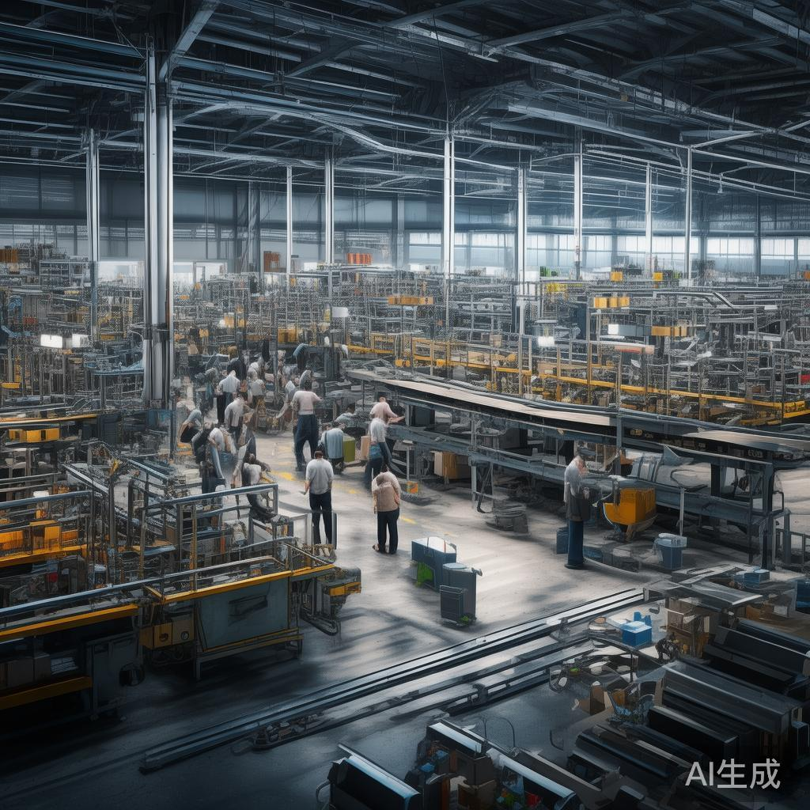
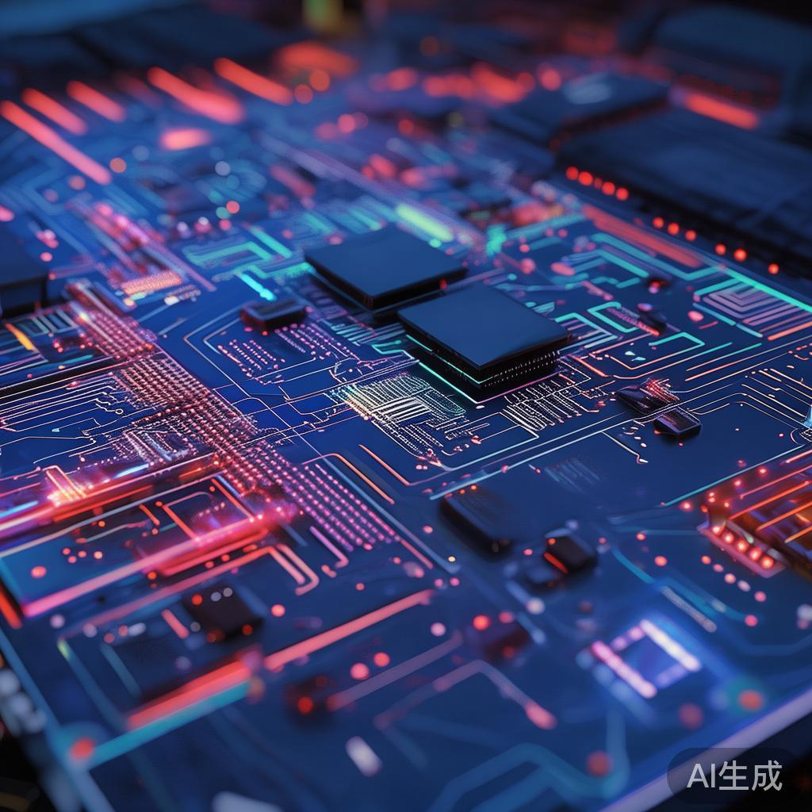
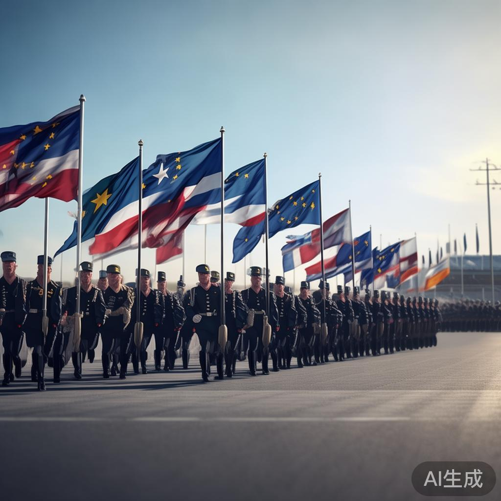
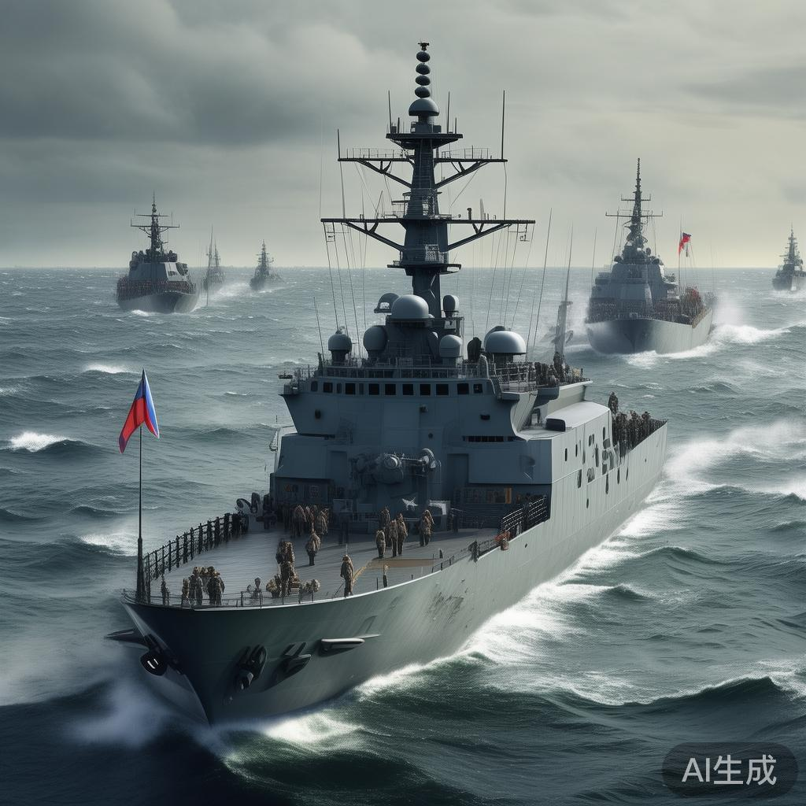
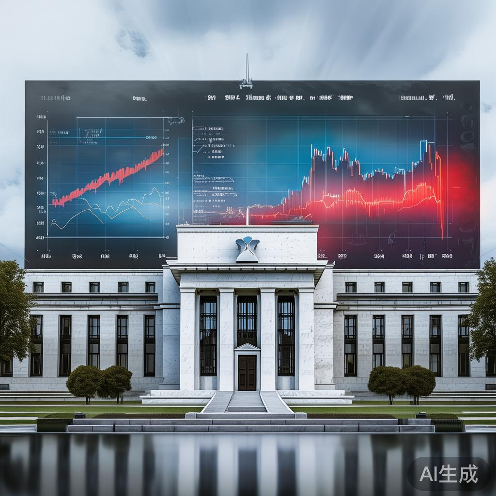
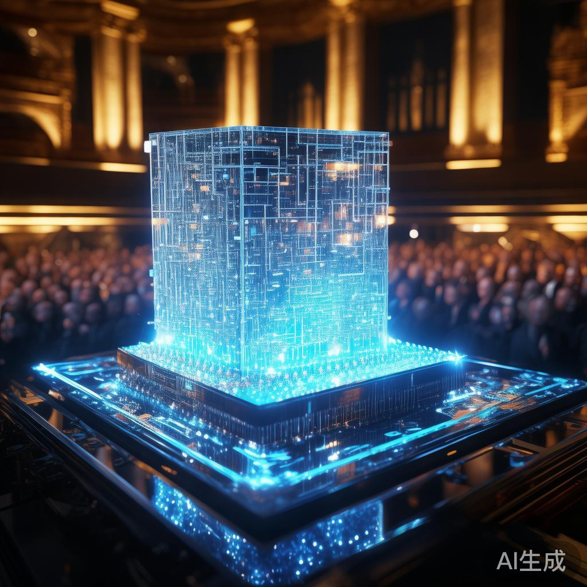
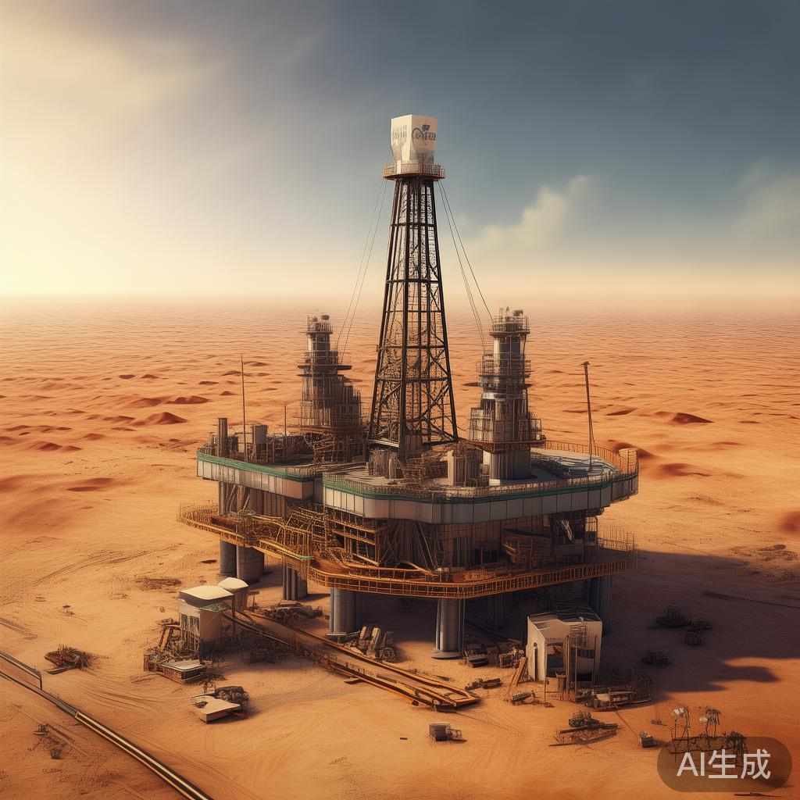
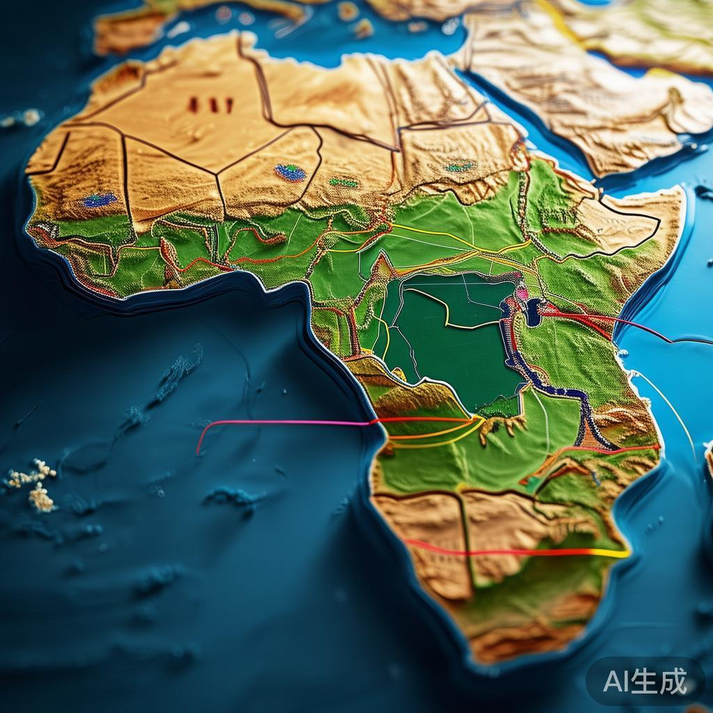
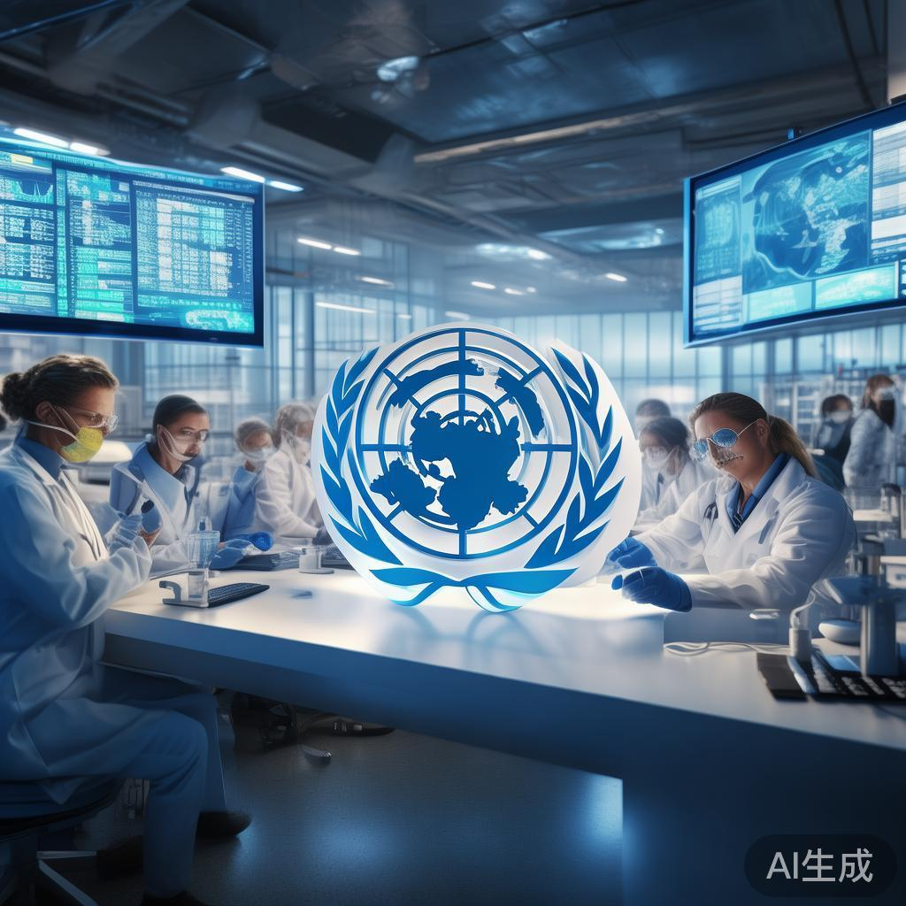

01
上合组织比什凯克峰会闭幕 通过多边合作宣言
上海合作组织成员国元首理事会第二十六次会议9月1日在吉尔吉斯斯坦首都比什凯克闭幕，与会领导人通过《比什凯克宣言》，强调加强成员国在安全、经济、人文领域的合作。宣言同时谴责对伊朗的军事打击和西方制裁，呼吁建立更加公正合理的国际秩序。中国、俄罗斯、印度等国领导人出席峰会。
国际

上海合作组织成员国元首理事会第二十六次会议9月1日在吉尔吉斯斯坦首都比什凯克闭幕，与会领导人通过《比什凯克宣言》，强调加强成员国在安全、经济、人文领域的合作。宣言同时谴责对伊朗的军事打击和西方制裁，呼吁建立更加公正合理的国际秩序。中国、俄罗斯、印度等国领导人出席峰会。
俄罗斯总统普京在比什凯克峰会记者会上透露，去年俄罗斯与上合组织成员国的贸易额已超过4000亿美元，俄与上合伙伴的金融交易超过98%已实现本币结算。普京强调俄罗斯与中国的战略协作关系持续深化，两国在能源、贸易、科技等领域的合作成果显著。

中国国家统计局数据显示，8月份规模以上工业增加值同比增长4.5%，低于市场预期的4.8%，也低于7月的5.1%。这是自2024年8月以来最低增速。社会消费品零售总额增长0.6%，亦不及预期。分析师认为，房地产市场持续低迷和外部需求疲软是主要拖累因素。
受美国对伊朗军事打击影响，国际油价9月2日大幅上涨，布伦特原油价格上涨约4.7美元。市场担忧中东供应链中断，WTI原油价格突破每桶101美元关口。分析师警告，若冲突持续扩大，油价可能冲击150美元高位。能源危机担忧推高全球通胀预期。
多名澳大利亚游客在尼泊尔徒步期间失踪，澳大利亚外交部表示正与尼方紧密合作展开搜救行动。目前已派出专业救援队伍前往当地协助。事发地区地形复杂、气候恶劣，搜救工作面临巨大挑战。澳方提醒公民在尼泊尔山区旅行时需格外注意安全。

据外媒报道，美国商务部正考虑新一轮出口管制措施，拟限制中国企业使用远程AI服务器。此举被视为对华芯片管制的进一步升级。分析人士指出，美国试图通过限制算力获取来延缓中国AI发展，但中国本土芯片产能持续提升，管制效果可能有限。

美国要求北约欧洲成员国将国防开支提升至GDP的5%，引发欧洲盟友不满。目前北约仅少数成员国达到2%的最低标准。专家分析，美国施压背后反映其全球战略重心调整，欧洲安全自主问题再次成为焦点。德国、法国等国呼吁承担更多责任，但内部经济压力制约军费增长。

俄罗斯国防部9月1日发表声明，警告任何在波罗的海地区的军事升级都将遭到毁灭性回应。此前北约在波罗的海地区举行大规模军演，俄方视其为直接威胁。分析认为，俄乌冲突持续背景下，俄与北约紧张关系仍有升级风险。
据外媒披露，字节跳动通过马来西亚中转，将约3.6万颗英伟达B200 AI芯片运往中国。美国出口管制框架将马来西亚列为中等风险国家，允许先进芯片进口但有限制。此举引发美方关注，分析认为中国企业正通过复杂供应链规避出口管制。

受中东局势推高油价影响，市场预计美联储9月15-16日会议加息概率升至约70%。高盛、花旗等投行纷纷上调通胀预期，警告能源价格传导效应可能削弱降息空间。债券市场大幅动荡，收益率曲线陡峭化，股市承压。

2026年诺贝尔物理学奖授予在量子计算领域做出突破性贡献的科学家，其中一位为华裔物理学家。获奖成果为开发可编程量子处理器奠定基础，被誉为量子时代的关键一步。这是华人科学家连续第三年获此殊荣，彰显华裔学者在基础科学领域的卓越贡献。
多位美联储官员在公开讲话中释放鹰派信号，表示若通胀数据持续高于目标，年内可能不再降息。市场对降息预期的重新定价引发股市波动。美联储点阵图显示，多数官员预计2026年仅有1-2次降息，远低于年初预期的4次。
印度与俄罗斯宣布扩大本币结算范围，双方贸易中卢布和卢比结算比例将显著提升。此举被视为印度减少对美元依赖的重要一步。分析指出，俄罗斯因制裁压力加速去美元化，印度也在寻求贸易结算多元化，双边本币结算机制将持续深化。
联合国粮农组织发布报告警告，受气候异常和地缘冲突影响，全球粮食供应链面临严峻挑战。俄罗斯、印度、阿根廷等国相继出台粮食出口限制措施，引发国际市场担忧。分析师预测，若局势持续，全球粮价可能再涨20%。
欧盟正式通过《人工智能法案》，成为全球监管最严格的AI法规。法案要求高风险AI系统必须接受透明度和安全审查，违者最高可处全球营业额7%的罚款。硅谷科技巨头表示将调整欧洲业务以合规，但担忧创新受抑。

沙特阿拉伯国家石油公司宣布在东部省份发现大型油田，预计新增日产能50万桶。这是沙特近十年来最大油气发现。分析认为，此举将强化沙特在全球能源市场的主导地位，但也引发对碳排放目标的担忧。
日本央行在货币政策会议上意外宣布加息25个基点，将利率从0.1%提升至0.35%。这是继2024年重启加息周期后的第三次加息。日元兑美元汇率应声大涨，东京股市开盘下跌。市场预计日本央行将继续渐进式加息路径。
特斯拉正式在洛杉矶、纽约、迈阿密、旧金山和芝加哥五个城市推出Robotaxi全自动驾驶出租车服务。首批车辆约5000辆投入运营。马斯克表示，此举标志着自动驾驶技术商业化里程碑。但监管机构和反对者对安全性仍存担忧。

非洲联盟39个成员国在埃塞俄比亚首都亚的斯亚贝巴启动非洲大陆自贸区第二阶段谈判，重点讨论服务贸易、投资保护和知识产权等议题。非盟委员会主席表示，自贸区建成将带动非洲内部贸易额增长数倍，是全球最大自贸区。

世界卫生组织发布新版大流行防范框架，要求成员国建立更强大的疾病监测和应急响应机制。框架包括建立全球病原体数据库、共享病毒基因序列、协调疫苗研发等条款。分析认为，这反映了后疫情时代国际社会对防范新发传染病的共识。
💬 评论区